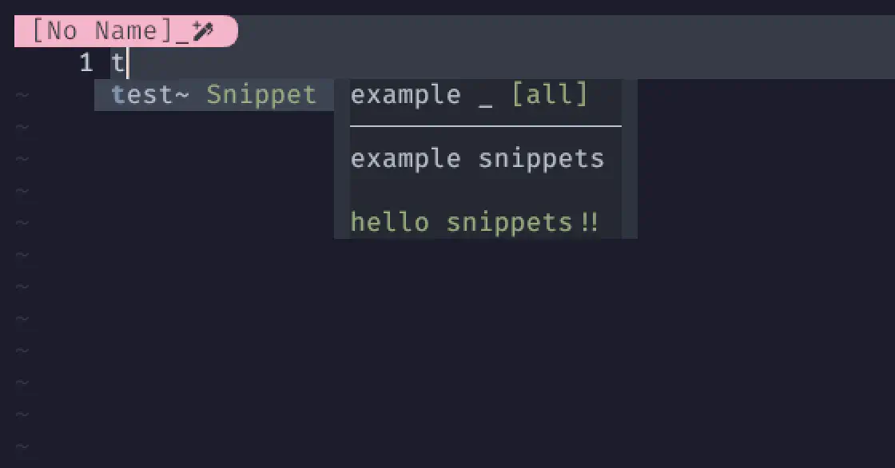
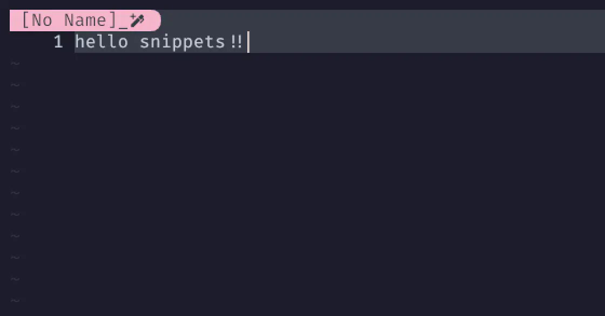

cmp_luasnip
前回のLuaSnipから引き続き、頑張っていきましょう❗
luasnip completion source for nvim-cmp
nvim-cmp の luasnip 補完ソース。
今回はスニペットを実際に動かすところまで行きます😆
Well, you should see Polythene Pam 1
She's so good-looking but she looks like a man
まあ、ポリエチレンを纏ったパンを見てみなよ
彼女にとても似合っているが、なんだか見た目は男みたい
Install
まあ、これはいつも通りです。
use {
'hrsh7th/nvim-cmp',
config = function() require 'extensions.nvim-cmp' end,
requires = {
'hrsh7th/cmp-nvim-lsp',
{
'L3MON4D3/LuaSnip',
tag = "v1.*",
run = 'make install_jsregexp',
config = function() require 'extensions.luasnip' end,
+ requires = 'saadparwaiz1/cmp_luasnip',
},
},
}
Setup
じゃあ、これもまたnvim-cmp.luaを開いて、組み込んでいきましょう。
local cmp = require 'cmp'
local luasnip = require 'luasnip'
local map = cmp.mapping
cmp.setup {
-- (中略)
sources = {
{ name = 'nvim_lsp' },
+ { name = 'luasnip' },
},
+ snippet = {
+ expand = function(args)
+ luasnip.lsp_expand(args.body)
+ end,
+ },
}
Get a dose of her in jackboots and kilt
She's killer-diller when she's dressed to the hilt
軍用ブーツとキルトを着けた彼女を見てみなよ
思いっきり着飾った彼女は とびっきり素晴らしい
Snippets
これはもうLuaSnipやNeovimに限った話ではないので、すっごい適当に流します❗
「そういう感じね〜」ぐらいで汲んでください😉
ここに載せるディレクトリ構成はあくまでわたし自身が一番都合の良いものになっています。
最終的にはpathsで指定してあげればいいので、好きな場所に作っちゃえばOKです🤗
Create a Directory
まず、いつも使っているluaディレクトリと同列にsnippetsというディレクトリを作りましょう。
mkdir snippets
で、その中で以下2つのjsonファイルを作成してください。
package.json
{
"categories": ["Snippets"],
"name": "my-snippets",
"contributes": {
"snippets": [
{
"language": [
"all"
],
"path": "all.json"
}
]
}
}
今回はサンプルなのでlanguageにはallを指定していますが、
例えばlua・markdownなど、言語ごとに細かく指定することもできます😉
Snippets Json File
続いて、言語に対して使用するスニペットを定義していきます❗
{
"example": {
"prefix": "test",
"body": ["hello snippets!!"],
"description": "example snippets"
}
}
paths
そしたら、luasnipに「ぼくのスニペット、ここおいとくねー」...と、教えてあげましょう🦮
This collection can be loaded with any of
以下のいずれかを搭載することができます。
-- don't pass any arguments, luasnip will find the collection because it is
-- (probably) in rtp.
-- 引数を渡さない場合、luasnipはrtpにあるコレクションを見つけるでしょう（おそらく）.
require("luasnip.loaders.from_vscode").lazy_load()
-- specify the full path...
-- フルパスを指定する...
require("luasnip.loaders.from_vscode").lazy_load({paths = "~/.config/nvim/my_snippets"})
-- or relative to the directory of $MYVIMRC
-- または $MYVIMRC のディレクトリからの相対パス
require("luasnip.loaders.from_vscode").load({paths = "./my_snippets"})
本当はpathsを指定しなければ勝手に探してくれるんですが、
わたしはpackage.jsonをrtp直下に置きたくなかったので、パスを指定する形をとってます😅
突然rtpとか言い出しちゃったんですけど、これはruntime path の略でしょう (おそらく)。
単純にrtpでweb検索するとReal-time Transport Protocolが出てくるんですが、これは関係無いはず🧐
require('luasnip.loaders.from_vscode').lazy_load {
paths = {
'./snippets',
},
}
そしたらなんか適当にnvimを起動して、Insertモードからおもむろに "t" を入力してみましょう。
| Step 1. | Step 2. |
|---|---|
|  |  |
「これがsnippetかぁ〜。」っていうのが伝わるといいな🥹 ...伝わったかな❓
I'll take you all.
ということで、ようやくスニペットが動きました。
もし今までに手塩にかけて育ててきたスニペットがいれば、それはもう即戦力❗
She's the kind of a girl that makes "The News of the World"
Yes, you could say she was attactively built
彼女は "The News of the World" に載るような子だよ
そうさ、彼女は魅力的だと言っていい
わたし自身はと言えば、自分のスニペットはほぼ育ててないんですよねー😅
同じように「育ててないよー」ってな人も (おそらく) いると思うので、
前回ぬるっと出ていたFriendly snippetsに話が続いていくわけです😉
1: Polythene Pam (by The Beatles): タイトルの "Polythene" は、ポリエチレンの (主にイギリスでの) 別称。 Lennon は、本作をきつめのリヴァプール訛りで歌っている。 本作のモチーフについて、Lennon は「とある女性と僕たちを最初にマスコミに露出してくれた、 イギリス版の Irwin Allen Ginsberg ともいえる男との思い出。 1963年8月のツアー中に会ったんだけど、僕は女連れで、向こうにも僕に会わせたいという女がいた。 その女はポリエチレンを身に纏っていると聞いていたけど、本当にそうだった。 長靴やキルトは着けてない。あれは僕の捏造だ。ポリ袋の中の変態的なセックス。 とにかく曲のネタが欲しかったんだ」と語っている。 George Harisson は、テレビシリーズ『The Beatles Anthology』のインタビューで、 「僕がこの曲を気に入ったのは、すごくリヴァプールっぽかったからだ。 コミカルでありながら、シリアスなところもある曲を書く人間はいなかった。 この曲はとても上出来なロックンロール・ナンバーだったけど、明らかにジョークなのに、誰も笑わず、 誰もピンときていないと、もどかしくなってくることもある」と語っている。 Wikipediaより